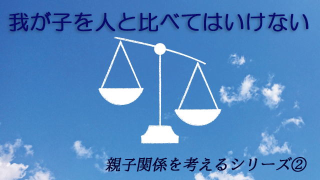

誰でも子どものころ親にこんなことを言われたことはないだろうか。
「ホラ、ごらんなさい。友だちの○○ちゃんは、あんなにしっかりしてるんだからあなたも少し見習いなさい」
「○○クンは毎晩遅くまで勉強してるらしいわよ。テスト近いのにあなた大丈夫なの？」
「泣くんじゃない！皆に笑われるよ」
こんなふうに他人と比較されて叱られたり注意されたことはないだろうか。
いや、子どもの時に限らない。大人になっても他人との比較に悩まされることは多い。
「今年の新入社員は去年に比べてヤル気が足りない」と上司から叱られたり「アイツも人一倍努力したんだ。お前も頑張れ。やればできる」など同僚と比べられたこともあるのではないだろうか。
他と比較して頑張らせようとするのは親や上司に限らない。教師、部活の顧問およそ指導的立場にある者は多かれ少なかれ、このように他人―多くは基準となる優位な他者―と比べる形で奮起させようとする。
確かにモデルとなる他者を想定して「お前のこの部分が足りない」と指摘することは分かりやすい指導ではある。それゆえ安易に乱発しがちだ。だがそれは人間に優劣をつけることであり、誰々に比べてお前は劣っているという烙印を押す行為でもある。
他人との比較による評価でもっとも恐いことは、比較されることによって劣等感を植え付けられることにある。
幼児期の親の何気ない言葉から始まって、学校の教育システムに至るまでこの「他との比較」による評価は執拗に続く。学校などはまさに比較評価の巨大システムだ。
テストの点数、偏差値、順位、入学試験の合否。これらによって常に自分は他者と比べてどの位置にいるのか否応なく思い知らされる。
こうして私たちの多くは何らかの劣等感を潜在意識に植え付けられて育ってしまう。
この劣等感は「どうせ自分は何をやってもダメだ」という無力感や、逆に他人の劣った部分を見つけて密かな優越感を得ようとする「ゆがみ」をもたらす。
私の個人的考えだが、他人と比較されることまた自分と他人を比較することは人生でもっとも不幸な生き方の一つだと思う。
そうならないためにも親は、我が子を安易に他人と比べてはならない。
親は「比較」以外の基準をもとう
先ほども言ったように、他人と比較して評価することは私たちの習い性になっている。
それゆえ親も、我が子をつい他人と比べてしまうことを無自覚でやっているといえる。まずそのことに気付くことが大事だ。
親もまた人と比べられて育ってきた。だから無意識に我が子と人を比べてしまう。
この「自覚しにくい」ことに気付いて、心の中で固く我が子と他人を比べないと誓って欲しい。親の中には他人とは比べないが、無意識に他の兄弟(姉妹)と比べてしまっている人もいるのでここは注意したい。
兄弟と比べられることは他人以上に子どもの心に傷をつけるからだ。
たとえば兄が成績が良く弟がイマイチの場合、すでに弟は兄にコンプレックスを抱いているのに親がもし「お兄ちゃんはちゃんと努力していたのに…」などと思っていたらどうなるか。たとえはっきり口に出さなくても親が心の中で思っているだけでも伝わってしまう。その子はますます勉強から遠ざかり下手をすると問題行動に走るだろう。
そんな例を私は結構多く見てきた。
だから親は子どもを良くしようと思ったら、他人と比較し「○○には負けるな」とか「○○もガンバっているから…」という励まし方以外の方法を考えるべきだ。
つまり子どもを評価する物差しを人との比較に置くのではなく、その子自身の持っている他にはない個性や能力にもっと意識を向けるということ。その上でそれらの力が以前より向上するよう励ますことが大切だ。
子どもには多様な能力が潜在している。仮に勉強が苦手でもスポーツや芸術の才能が秀でているかも知れない。対人関係で人から好かれ信頼されるタイプかも知れない。
対人スキルなどは社会に出てから中途半端な学力より効力を発揮することは誰でも分かる。
だから親は子どもに対してもっと多彩な評価基準をもったほうが良い。子どものもつ様々な個性や才能を見い出すことに喜びを感じて欲しい。
他人と比べると子どものマイナス部分にしか目が行かなくなってしまう。しかし欠点と思えるところが本当に欠点なのかは分からない。
「ウチの子落ち着きがなくて…」と言う親がいるが、むしろ「落ち着きのなさ」はフットワークが軽く判断が早いことの表れともいえる。そうなると局面によっては長所とも考えられるわけで、あくまでその子の個性がどう見えているかに過ぎない。
欠点に見えるのは人と比べたり、世間のルールや常識に親が囚われていて、その「あるべき姿」から外れていると考えるからだろう。
幸せは相対的比較からは生まれない
ところで親が我が子に望むこと。その究極の願いは子どもの幸せにあると思う。
私たちは誰でも幸せな人生を送ることを望んでいる。
だがその「幸福の基準」は何だろう。
お金持ちになること
社会的地位を手に入れること
容姿に恵まれていること
良い学歴や見栄えのする勤め先
素敵なパートナーと理想の家庭
これらを手に入れることで幸せを得ると感じる人は多いのではないか。だがこれは世間一般に流布されているイメージであって、形式的にこれらを手に入れても本当に幸せかどうかは分からない。
たとえばお金持ちとか社会的地位の高さといっても、上には上がいることに気づかされるだろう。容姿も学歴も同じ。有名企業に勤めたからといって仕事が自分に合わなかったり、人間関係がうまくいかないなら幸せでも何でもない。
要するにこれら相対的比較から生じる基準に依存する限り、本当の幸せは得られないということになる。
もちろん私はこれら幸せの基準そのものが意味がないと言ってるわけではない。
ただ、これら外側にある幸せのイメージを追いかけるだけでは常に他者と比較せざるを得ず、比較する限りキリがなく心の平安は得られないと言いたいのだ。
だから幸せを得るには相対的比較ではなく絶対的基準を持ったほうが良いと思っている。絶対的基準とは自分の内側―考え方、個性才能―を中心にすえるということだ。
特にこれからの時代は「個の力」が何よりも大切になってくる。かつてのように、学歴やどんな組織に属しているかを問われるのではなく、どんな才能、能力があって個としてどんなことができるのかが問われる時代になった。
またユニークな個性を活かしてその人にしかできない領域を開拓したり、新しい分野を創造する独自のスキルはますます求められている。
だから子どものうちからできる限りその子のもっている「個の力」を引き出し自覚させ、励まし伸ばすことが大切となる。
そのためには親は比較ではなく、その子にしかない特性を日ごろから意識的に認める姿勢をもちたい。
それはつまり子どもの存在価値をそのまま認めることを意味する。
子どもにとっても幸せになるには「他の何者かになる」必要はなく、自分のままでいて良いのだと感じることができる。その自己信頼、自己肯定感こそがあらゆる困難を乗り超える力の源となる。
なぜなら自分らしさを発揮しさえすれば幸せになるという絶対的基準を己の中に見い出したからだ。